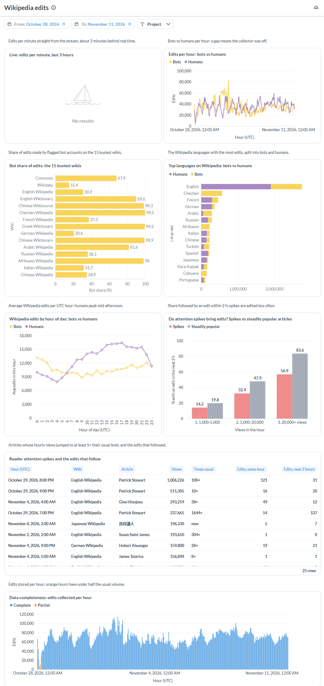
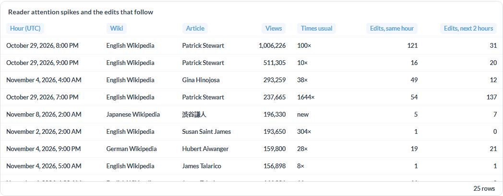
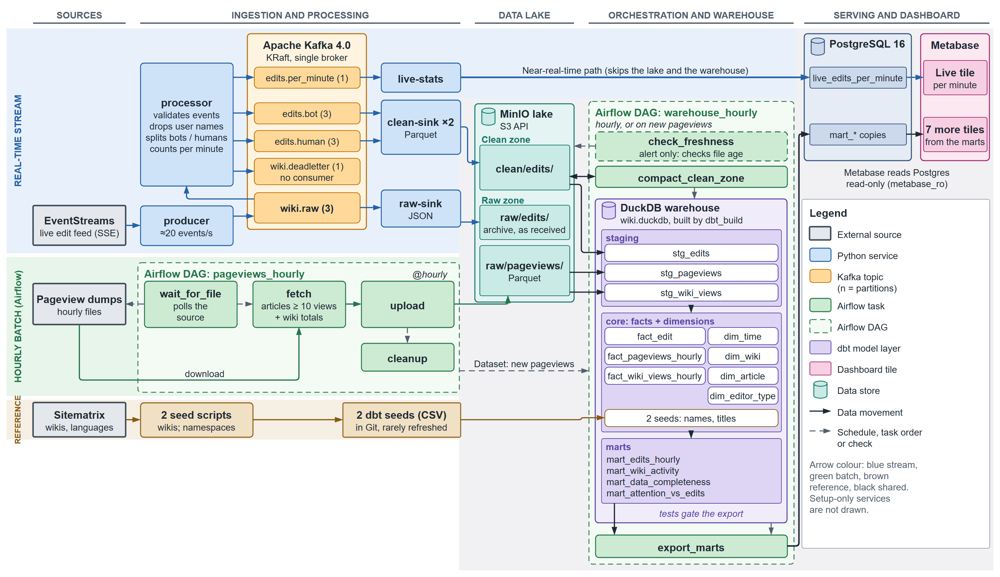
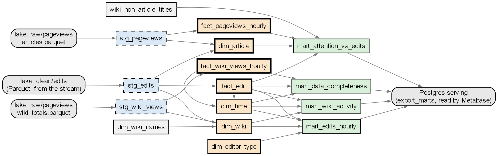

An end-to-end pipeline for every live edit on every Wikimedia wiki, 28 Oct – 11 Nov 2026 (UTC).
Sumaiya Rizwan 60102626 · Lynn Younes 60107070
DSAI5102 · Data Architecture & Engineering · UDST · 25 Nov 2026
In the order the project brief asks for: the problem, how it's built, the pipeline running, what it shows, and what we learned.
who it's for, three Wikimedia sources
Sumaiyatwo paths, one lake, one warehouse; why each tool
LynnKafka, Airflow, dbt, then the demo
Lynn8 tiles, 5 findings
Sumaiyawhat broke, the decisions it forced, limits
Lynnbackup for every answer in the appendix
bothEditing pressure = edits per wiki over time that may need review.
For: volunteer patrollers and wiki admins, who review recent changes for vandalism.
Patrollers' time is limited, and the raw stream doesn't say where to spend it.
→ findings 2 and 3
→ findings 1 and 4
→ finding 5
| Layer | Tool | Instead of | Why |
|---|---|---|---|
| Message log | Kafka | RabbitMQ | Replayable log; several independent consumers; consumer groups |
| Stream processing | Python consumers | Flink | ~20 events/s needs no cluster; unit-tested |
| Data lake | MinIO | AWS S3 | S3-compatible, local, free |
| Orchestration | Airflow | cron | Retries, backfill of missed hours, data-aware scheduling |
| Warehouse | DuckDB not in course | ClickHouse, BigQuery, Postgres | In-process, columnar, reads Parquet on S3 directly |
| Transformations | dbt not in course | Spark, SQL scripts | Lineage, incremental models, tests as a gate |
| Serving | Postgres | read DuckDB directly | A DuckDB file allows one writer; the dashboard must never block |
| Dashboard | Metabase not in course | Superset, Looker Studio | One container; the whole dashboard is rebuilt by a script through its API |
| Containers | Docker Compose | manual installs, Kubernetes | All 14 services start with one command on any laptop |
Offsets committed only after the write. A crash can repeat events, never lose them; duplicates removed by event id.
Per-minute counts close only when every partition has passed the minute (per-partition watermark).
Gaps over 3 s are queued on disk and replayed with ?since= while live data keeps flowing.
s3://lake/raw/pageviews updated · or every hour, whichever comes first
4 runs failed a test on 8–10 Nov → export skipped, the dashboard kept the last good data, the next run passed. Tests are a gate, not a report.
stg_edits
stg_pageviews
stg_wiki_views
3 facts, 4 dims
2 seeds
facts reload only the last 3 days
pre-aggregated for the 8 tiles, so the dashboard never scans 25 M rows
so any date range sums correctly before dividing.
data tests run on every build: not null, unique, accepted values, relationships. If one fails, nothing is exported.
Tested on fresh clones on macOS and Windows.
dt=/hour=PASS=51From / To filter every warehouse tile · Project filters the two all-wiki tiles · each tile has a title and a one-line explanation.
of edits on Wikipedias came from flagged bot accounts. 48.6% across all 771 wikis (25.1 M edits).
→ Raw edit counts on Wikipedias overstate what patrollers see by about 1.8×: flagged bot edits are hidden from their default review list.
Share of human edits on Wikipedias
Chechen: #2 by edits, #65 by human edits; 99.5% bots. Arabic #5 → #17.
→ Send review effort by human edits, not by volume.
human edits at the 17:00 UTC peak vs the 04:00 low. Bots vary only 1.5×.
→ human edits stay above 14,800 an hour from 13:00 to 22:00 UTC: a broad plateau, not a sharp peak (the busiest six hours carry 31%, 25% if spread evenly). The European afternoon and evening and the American morning.
of 24,234 spikes get no edit in the spike hour or the two after.
→ An alert on jumps in views alone would mostly point at articles nobody then edits. Big news still can: 2026 Kraków shooting, 203 edits in two hours.
Share of article-hours with ≥ 1 edit in the next 2 h (spike hour not counted; full 24-h baseline only). Above 20,000 views: 346 spikes vs 580 hours of 39 articles. Descriptive, not causal.
Standby up to 5 h 47 min; Wikimedia drops long connections every few minutes.
Queue every gap on disk, replay it by time (?since=), resume where it stopped.
205,814 events wrongly dropped as "late" during a backlog.
A per-partition watermark: a minute closes only when every partition has passed it.
381,066 duplicate events written.
Hourly compaction, 60 s graceful shutdown, dedupe by event id in dbt.
File-system errors; some warehouse writes lost.
Checked every lake file, rebuilt the warehouse from the lake: why the raw zone exists.
13 pageview hours failed, but a clean-up step made the runs look green.
Clean-up is now a teardown task, so failures show red.
Main pages in finding 5's comparison group made spikes look 3× as edited.
A seed of non-article pages from each wiki's API. The finding reversed, and we say so.
of Wikipedia edits are bots: rank wikis by human edits, not totals.
of human Wikipedia edits are on 10 Wikipedias; English alone 40.9%.
UTC is when human pressure is highest: a plateau, the busiest 6 hours carry 31% of the day.
of reader spikes get no edit: a jump in readers is not an early warning.
| One laptop collects | → a server |
| One Kafka broker | → three |
| Bot flag is an estimate | → unflagged bots count as humans |
| 15 days; finding 5 descriptive | → matched comparison, intervals |
Lesson: a pipeline is only as good as its ability to recover and to check itself.
Sumaiya Rizwan · Lynn Younes
Keys: → / ← step, D details of this slide, B or Esc back, A this index, O overview of all slides, S presenter window (script, next slide, timer), N notes drawer, F full screen, ↑ ↓ scroll an appendix page.
Wikipedia's volunteer patrollers review recent edits for vandalism and mistakes, about 1.7 million edits a day. The dashboard tells them which wikis are busiest, how much of the volume is flagged bot work (hidden from their default review list), and whether a jump in readers warns of a rush of edits.
We don't claim that: we show whether spikes are followed by edit surges. A news event can drive both, so we show timing, not cause.
Cross-wiki patrollers: stewards, global sysops and small-wiki monitoring volunteers watch many small wikis at once, and need to know that Chechen's volume is almost all bots. Within one wiki, the hourly profile and the spike tile are the useful parts.
Honestly: we didn't validate this with patrollers; that would be the first next step.
Read literally, yes, which is why we say hidden from their default review list: flagged bot edits are hidden from the default recent-changes view, so raw counts overstate what patrollers see by about 1.8× on Wikipedias. The share is an estimate: unflagged bots count as humans, a flagged account's manual edits count as bots.
| Source | Type | Rate | Volume |
|---|---|---|---|
| EventStreams recentchange | stream (SSE) | continuous | ~20 events/s, 1.7 M/day |
| Pageview dumps | batch files | hourly | ~57 MB, 6.4 M rows/file → ~193,000 kept |
| Sitematrix API | reference | rarely | 1,073 wikis |
| siteinfo API (each wiki) | reference | rarely | 21,246 non-article titles, 364 Wikipedias |
Licences: pageviews CC0; EventStreams and Sitematrix under the Wikimedia Terms of Use.
| Edits kept (window) | 25,093,717 |
| Wikis · Wikipedias | 771 · 347 |
| Hours · empty hours | 360 · 0 |
| Duplicates removed | 10.8 M (30% of raw) |
| Dead-letter events (whole run) | 492 |
| Raw zone → clean zone | 7.52 GB → 1.08 GB |
| Hours with pageviews | 347 of 360 |
| Low hours (feed, not us) | 28 Oct 02:00–06:00 |
One file has 5.25 M Wikipedia rows, ~126 M a day: too much for a laptop warehouse. ≥ 10 views leaves ~193,000 rows an hour. A spike needs ≥ 1,000 views and 5× the 24-hour average, so every spike is still there, and per-wiki totals keep all views.
After the window we read back every lake file and checked it holds the number of events in its name; the warehouse has exactly the clean zone's 25,093,717 edits; all 360 hours have data. The low hours on 28 Oct are just as low in the raw zone, for bots and humans, so it was the feed. Checking caught real bugs: the title "-" (unknown page) produced 75 fake spikes until filtered.
Yes, for pageviews: the raw zone is lossless only for edits. The files stay online, unchanged and CC0, so Wikimedia's server is effectively our raw layer, and 57 MB × 360 hours (~20 GB) is more than a laptop can spare. Changing the threshold means downloading again, which the idempotent DAG handles.
We checked: every one of the 25,093,717 edits has its own revision id per wiki, zero repeats. Replays re-send the same id, so event_id is the right key.
Replays deliberately overlap the edges of each gap so nothing is missed, and Kafka's idempotent producer only stops repeats of the same send, not a second delivery from the source. Removing them later is cheap and safe (compaction per hour, then by event_id in dbt), and the raw zone records what we received. Cost: ~2.3 GB of extra compressed JSON; tracking the last id per gap would cut it.

| # | Tile | Answers |
|---|---|---|
| 1 | Live edits per minute (last 3 h) | the stream is alive |
| 2 | Edits per hour: bots vs humans | finding 1 |
| 3 | Bot share of the 15 busiest wikis | findings 1, 2 |
| 4 | Top Wikipedia languages: bots vs humans | findings 2, 3 |
| 5 | Edits by hour of day | finding 4 |
| 6 | Do attention spikes bring edits? | finding 5 |
| 7 | Largest spikes and the edits that follow | finding 5 |
| 8 | Data completeness per hour | trust: gaps, partial hours |
From / To filter every warehouse tile; Project filters the two all-wiki tiles. The live tile is empty in this picture because the collector was stopped after the window. The whole dashboard is created by scripts/metabase_setup.py through Metabase's API.
| Wikipedia | Edits | Human | Bots | Rank | Human rank |
|---|---|---|---|---|---|
| English | 2,746,557 | 1,897,411 | 30.9% | 1 | 1 |
| Chechen | 566,056 | 2,722 | 99.5% | 2 | 65 |
| French | 461,085 | 289,119 | 37.3% | 3 | 3 |
| German | 365,804 | 290,266 | 20.6% | 4 | 2 |
| Arabic | 290,120 | 53,494 | 81.6% | 5 | 17 |
| Russian | 288,296 | 184,084 | 36.1% | 6 | 5 |
| Afrikaans | 225,540 | 4,447 | 98.0% | 7 | 56 |
| Italian | 225,485 | 153,966 | 31.7% | 8 | 6 |
| Chinese | 220,592 | 143,559 | 34.9% | 9 | 8 |
| Turkish | 220,049 | 70,403 | 68.0% | 10 | 11 |
| Bot share, all wikis · Wikipedias | 48.6% · 45.3% |
| Bot share per day, lowest · highest | 40.4% (6 Nov) · 61.2% (1 Nov) |
| Bot edits on 1 Nov | 1.32 M (~60% above a typical day) |
| Edits on Wikipedias | 8,479,562 of 25,093,717 |
| Wikidata + Commons · all Wikipedias | 52.4% · 33.8% of edits |
| Human share: English · top 3 · top 10 | 40.9% · 53.4% · 74.2% |
| Human peak · low (avg per hour) | 16,434 at 17:00 · 7,911 at 04:00 |
| Peak / low: humans · bots | 2.1× · 1.5× |
| Human plateau (above 14,800/h) · busiest 6 h | 13:00–22:00 UTC · 31% |
| Bot share: Spanish · German | 12.9% · 20.6% |
Only partly: 17:00 UTC is 18:00 in Central Europe but noon in New York, and English Wikipedia has 40.9% of human edits. So the 13:00–22:00 UTC plateau is the European afternoon and evening and the American morning. We didn't split by language; mart_edits_hourly has hour_of_day and language_name, so it's one query away.
Yes: analysis/findings.sql holds the query behind every number, run against the exported marts in Postgres; it reproduces them exactly. Findings 1, 2, 4 and 5 can also be read off the dashboard.
| Spike | ≥ 1,000 views in the hour and ≥ 5× the article's previous 24-hour average |
| Steadily popular | article-hours with as many views that are not spikes (under 5×) |
| Followed by an edit | ≥ 1 edit in the spike hour or the two hours after (the tile: next 2 h) |
| Articles only | main pages and non-article namespaces removed, from each Wikipedia's own API (seed of 21,246 titles) |
| Views in the hour | Spikes | Steadily popular |
|---|---|---|
| 1,000–5,000 | 14.2% | 19.8% |
| 5,000–20,000 | 32.4% | 47.9% |
| 20,000+ | 56.9% | 83.6% |
24,234 spikes: English 10,719, Japanese 3,767, German 2,670. 77.5% get no edit. Band 1: 21,472 spikes vs 64,746 other hours. Band 3: 346 spikes vs 580 hours of 39 articles.
1,746 of the 2,326 non-spike hours above 20k views were main pages, Special:Search and project pages (0.9% of them had an edit). They made spikes look 3.1× as edited. Without them the comparison reverses.

At first every page in the pageview files. Above 20,000 views, 1,746 of the 2,326 non-spike hours were main pages, Special:Search and Wikipedia: pages: huge views, almost never edited. We now ask each Wikipedia's API for its namespaces and main page (a dbt seed) and keep articles only; steadily popular articles are then edited more often (84% vs 57%). The mistake is in the report's incident table.
It's descriptive: no significance test, and one story often spikes several hours in a row, so hours aren't independent. Above 20k the comparison is only 39 articles, so a few long stories dominate. But the direction holds in all three bands, including 21,472 spikes vs 64,746 hours at 1,000–5,000. Next step: a matched comparison with confidence intervals.
Under-10 hours barely matter (off by under 10 views against a 1,000 threshold). The 13 missing hours matter a little more: the baseline divides by 24 regardless, so for a day after a missing hour it is up to ~4% too low. Small next to the 5× rule; stated in limitations. Fix: divide by the hours present.
The hourly files count human readers only: Wikimedia removes known crawlers and detected automated traffic. That filter isn't perfect and we didn't validate individual spikes; this one is believable, with 121 edits in the same hour.
We checked one file against the Pageview API on 26 Oct: the file named 12:00 has exactly the API's 11:00–12:00 numbers for English Wikipedia. Off by one, every spike would shift an hour against the edits.
Findings 1–4 don't use pageviews: they count edits, each with its own revision id (zero repeats in 25,093,717), and the bot flag comes with the event. The error was in which pages we compared, not in the pipeline, and the reversal is shown, not hidden. analysis/findings.sql reproduces every number.

14 Docker Compose services; the diagram shows the ones that handle data. Source: docs/diagram/wikipedia_pipeline_architecture_v1.drawio, explained in docs/diagram/architecture_explanation.md.
DuckDB runs inside the process, so there's no server to operate. It's columnar, so scans are fast on a laptop, and it reads Parquet from MinIO directly. BigQuery is cloud-only and paid, ClickHouse is another server, Postgres is row-based and slower for large scans.
A DuckDB file allows only one writer, so the dashboard would fail while dbt rebuilds it. After every successful build the marts are copied into Postgres in one transaction, and Metabase reads them through a read-only user.
dbt keeps the SQL under version control, works out the build order from dependencies, and runs 35 data tests on every build. If any fails, the export doesn't run (it happened four times on 8–10 Nov). Spark would need a cluster for data this size.
Cron only starts jobs. Airflow adds retries, backfill of missed hours, dependencies between steps, a view of every run, and data-aware scheduling, which warehouse_hourly uses.
Edits are an endless stream that can't be downloaded again later, so they go through Kafka. Pageviews are hourly files that stay online, so a scheduled Airflow job fits and can backfill. Airflow never runs the stream.
MinIO stopped publishing free images in 2025, so we pin the last free build archived by Bitnami. Airflow follows the course lab's major version (2.x) with the lighter LocalExecutor: no Redis or Celery workers on one machine.
| Topic | Partitions | Written by | Read by (consumer group) |
|---|---|---|---|
wiki.raw | 3 | producer | raw sink, processor |
edits.bot, edits.human | 3 each | processor | clean sinks ×2 (one group) |
edits.per_minute | 1 | processor | live-stats |
wiki.deadletter | 1 | processor | inspected by hand |
Kafka keeps events durably, so several consumers read the same events independently and replay after a crash. Raw archive and processor read wiki.raw in their own groups; two clean sinks share one group. Scaling the sinks = adding containers.
At-least-once: each consumer commits only after its output is written, so a crash can repeat events but never lose them. Duplicates are removed by event id twice (compaction, then dbt): 10.8 M, mostly from replays. Invalid events go to the dead-letter topic with the reason (492).
Counted by event time: a minute is emitted two minutes after it ends. We first used the newest event on any partition as the clock; during a backlog one partition raced ahead and 205,814 events were dropped as late. Fix: a per-partition watermark.
The producer notices any gap over 3 s and queues the missing time on disk; a second connection replays it while live data keeps flowing. Every outage was replayed (longest 9 and 16 h); no hour is empty. Replaying three days again added only 0.1% new edits.
wiki.raw by wiki? Isn't it skewed?No consumer needs per-wiki order. The reason is co-location: per-wiki minute counts are state, and the key keeps each wiki's state in one processor instance if we scale it. The cost is skew (Wikidata and Commons are over half), accepted at 20 events/s; at higher volume we'd salt hot keys.
A weaker one. Open minutes live only in memory, so a restart can under-count them, and live-stats adds counts into Postgres, so a crash between write and commit can double-count a minute. Approximate by design; the warehouse is the source of truth. A real fix needs checkpointed state (Flink, Kafka Streams).
That data is gone: EventStreams has no long-term archive, and ?since= reaches back days, not weeks. The gap would show on the completeness tile and in stream.status; nothing is filled silently. Our longest gap was 16 hours. This is why the first extension is a collector on a server.
pageviews_hourly, one run per UTC hour: a sensor waits until the file is published (a network error counts as "not yet"), fetch filters it, upload writes two Parquet files, and cleanup (a teardown task) removes local copies. Catchup backfills every hour since 25 Oct; reruns overwrite the same files, so retries are safe.warehouse_hourly runs hourly or as soon as new pageviews land (an Airflow Dataset), so the DAGs coordinate without calling each other: check freshness → compact the lake → dbt build with tests → export to Postgres. One run at a time, because DuckDB allows one writer.pageviews_hourly?Catchup runs every hour since 25 Oct 05:00: about 740 runs and 42 GB of downloads, one at a time, each queuing a warehouse run. It works but takes hours; to check the batch path, trigger one run. The README says this.
A run's state followed its last task, and the clean-up step (which runs even after a failure) was last and succeeded, so failed hours looked green and were never retried. They failed within a second while the laptop was offline. Fixed: clean-up is a teardown task, ignored for the run's state. Found on 23 Nov after the numbers were frozen; reloading would change every nearby spike baseline, so we kept the window as analysed and say so.
28 Oct 12:00–17:00 · 7 Nov 20:00 – 8 Nov 00:00 · 8 Nov 09:00 · 11 Nov 04:00 (UTC). The files are still online, so clearing those runs would load them.

Generated from dbt's manifest (scripts/lineage_figure.py). Dashed: views; bold: incremental tables; plain: tables and the two seeds. dbt build: PASS=51 (35 tests + 14 models + 2 seeds).
editors?No. It's a distinct count, and distinct counts don't add up: summing hours counts a person once per hour. No tile sums it; the rule holds for event counts (edits, new pages, reverts). For distinct editors over any range: compute from fact_edit or store HyperLogLog sketches.
fact_pageviews_hourly linked to dim_time?An omission. dim_time ends at the last edit hour, so a later pageview hour would fail the test. Fix: extend the time spine to the latest hour of either source and add a unique-combination test on hour × wiki × article × access. The incremental unique_key already deduplicates; nothing tests it.
Most likely consistency: dim_article and fact_edit both read the live clean zone, and sinks write new files every few minutes, so a fact row can point to an article written after dim_article was built. The gate worked: export skipped, dashboard kept the last good data. Fixed 23 Nov: all edit models stop at the hour the run started, so the hour still being written is loaded by the next run.
docker compose up -d --build on a fresh clone. A bootstrap service loads six bundled hours of real edits (plus the 30 hours of pageviews the spike tile needs), runs the warehouse DAG once and builds the Metabase dashboard through its API, in about 5 minutes. Tested on fresh clones on macOS and Windows; the last test (20 Nov) found the spike tile failing without pageviews and a red first Airflow run, both fixed.MinIO stopped publishing free images in 2025; the last free build we pin has no web console. Browse it from the terminal: docker compose exec minio mc ls --recursive local/lake/clean/edits/ shows the date/hour partitions. DuckDB reads the same files over the S3 API.
Not any more: until 23 Nov each table had its own transaction, so for a few seconds one tile could show the new build and another the old. Now all four are dropped and recreated in one transaction; a query that arrives meanwhile waits for the commit.
docs/demo.md.pageviews_hourly paused (catchup).43 unit tests (stream code, Metabase setup) run in GitHub Actions on every push; 35 dbt data tests run on every warehouse build.
| Date | What happened | Fix |
|---|---|---|
| 27 Oct | Resuming with a Last-Event-ID header was silently ignored; replays ended with almost nothing | Replay by time with ?since= |
| 3 Nov | Wikimedia drops long connections every few minutes; a 16-hour replay restarted from its beginning each time and looped for two hours | Save how far a replay got and resume there |
| 5 Nov | After 9 hours asleep, the replay filled the sinks' buffers (~1 GB) and dbt was killed for lack of memory | Sinks also flush every 50,000 events |
| 7 Nov | A replay sends one data centre's topic up to now, then the other's; judging the end of a gap across both ended three replays with 0–202 events, leaving holes on 3 and 6 Nov | Track each topic separately; the holes were replayed (1,459,669 events) |
| 7 Nov | Events recovered more than a day late never reached the warehouse, and the status check still reported no gaps | Reload the last three days; count gaps on the deduplicated clean zone and flag half-empty hours |
| 8–10 Nov | Windows put the laptop into standby with the screen off although sleep was disabled (longest: 5 h 47 min) | Replayed after waking (511,225 events for the longest) |
| 8–10 Nov | Four warehouse runs failed a relationship test (fact rows whose article was missing from dim_article) | The gate kept the last good data and the next run passed; since 23 Nov every edit model stops at the hour the run started |
| 9–12 Nov | Hourly rebuilds grew Docker's disk file to 351 GB (46 GB in use); its file system recorded errors; some warehouse writes were lost | Checked every lake file against its event count (all intact), repaired and shrank the disk, rebuilt the warehouse from the lake |
| 28 Oct – 11 Nov | 13 pageview hours failed while the laptop was offline; the clean-up step ran last and succeeded, so Airflow showed green and never retried (found 23 Nov) | Clean-up is now a teardown task; a network error counts as "not yet published"; the 13 hours were not reloaded |
| 23 Nov | Main pages, Special:Search and project pages made up 1,746 of the 2,326 non-spike hours above 20,000 views; spikes looked three times as edited | A seed of each wiki's namespaces and main page marks non-article titles; finding 5 reversed |
Also on slide 16: a partition racing ahead dropped 205,814 events as late (→ per-partition watermark); sinks killed mid-backlog wrote 381,066 duplicates (→ compaction + 60 s graceful shutdown).
In order: the hourly full rebuild of the marts over the whole fact table (DuckDB capped at 1.5 GB and one thread); dim_article's NOT IN against millions of keys; then the single Kafka broker. Path: incremental marts by hour, facts partitioned by date, then a bigger engine (ClickHouse, or DuckDB on a bigger machine) and 3 brokers. The lake layout doesn't change.
Closer than we'd like: the quietest normal hour is 53% of the median. The four flagged hours (28 Oct, 02:00–06:00) were far below (bots 6%, humans 16% of the median at 03:00), and the raw zone confirms the feed was low. Sounder: compare each hour with the median for the same hour of day.
That data is gone; it would show on the completeness tile, nothing is filled silently. Longest gap: 16 hours. Hence: a collector on a server.